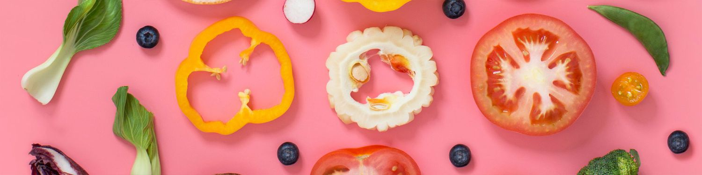
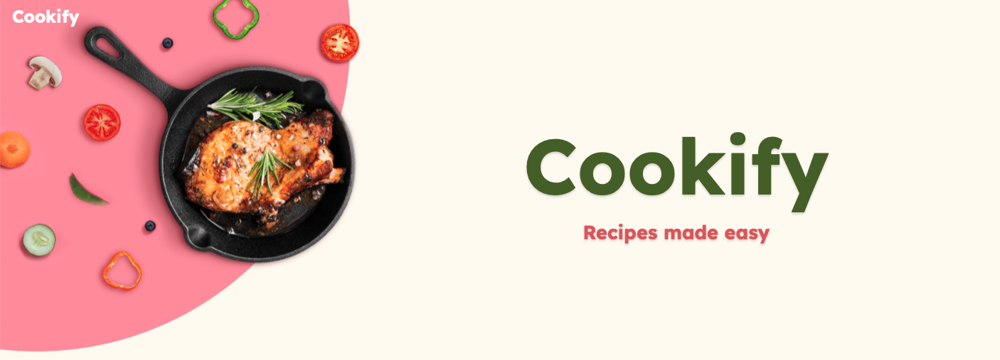
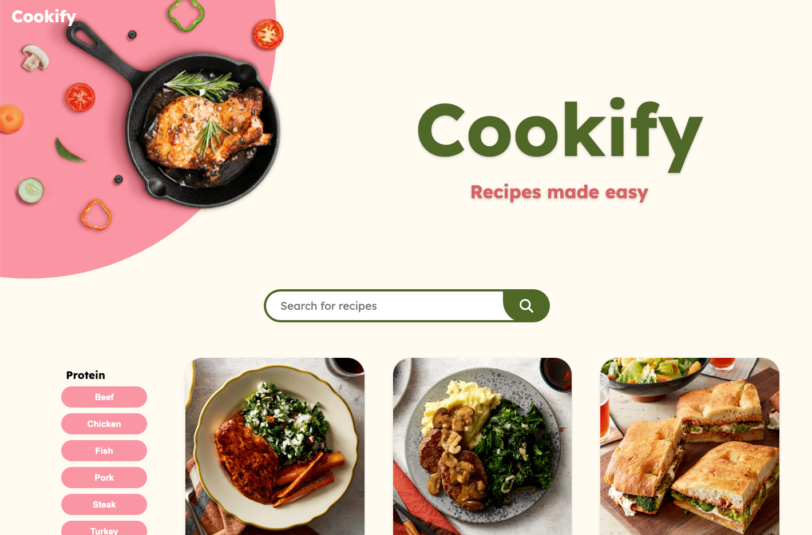
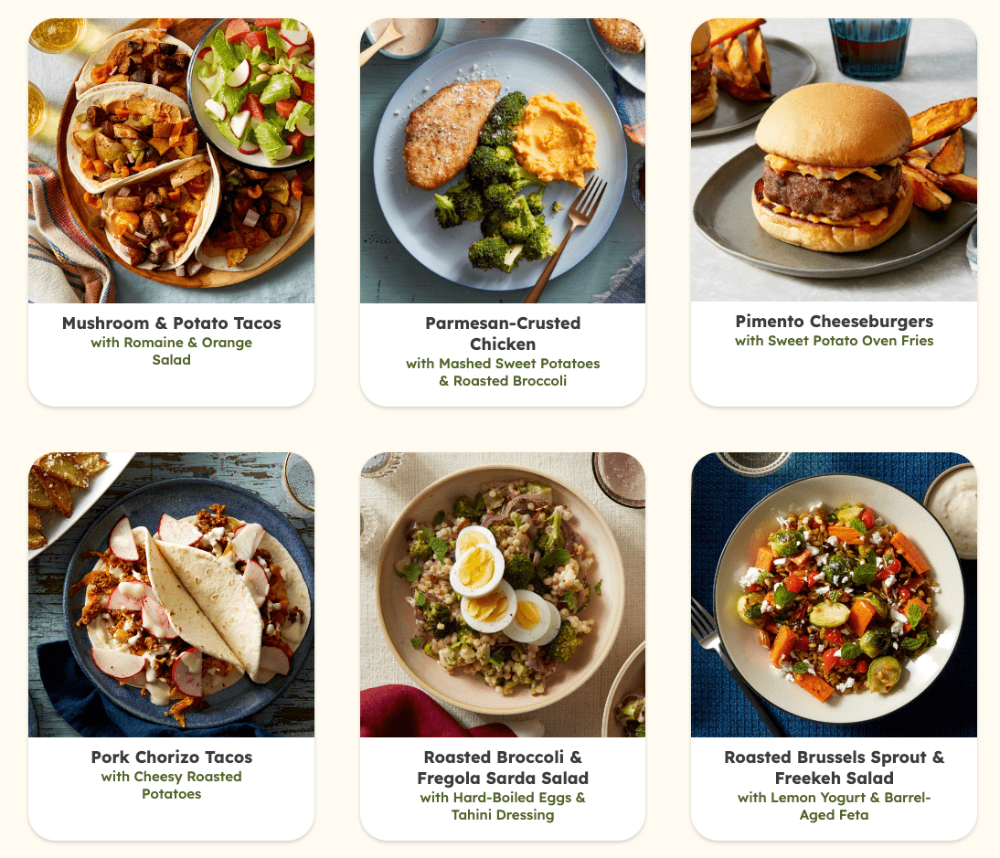
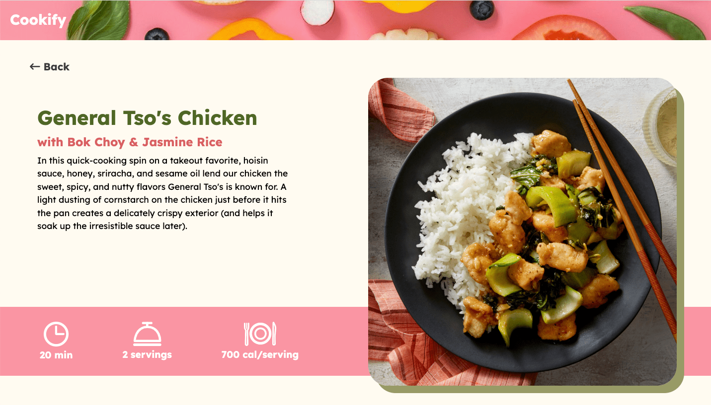
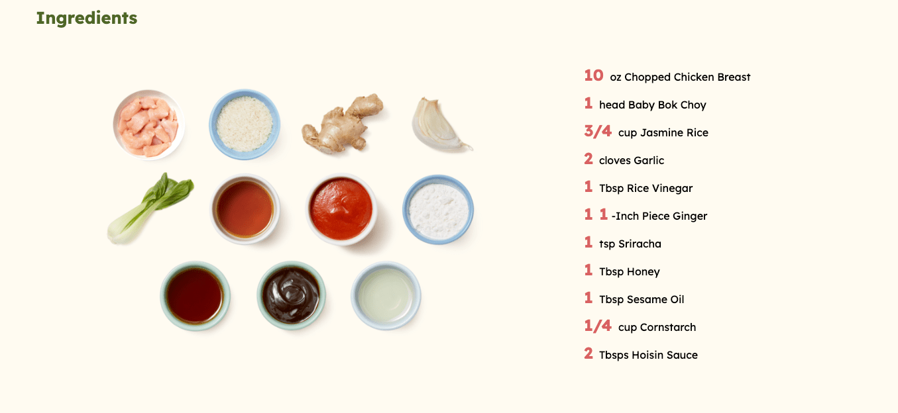
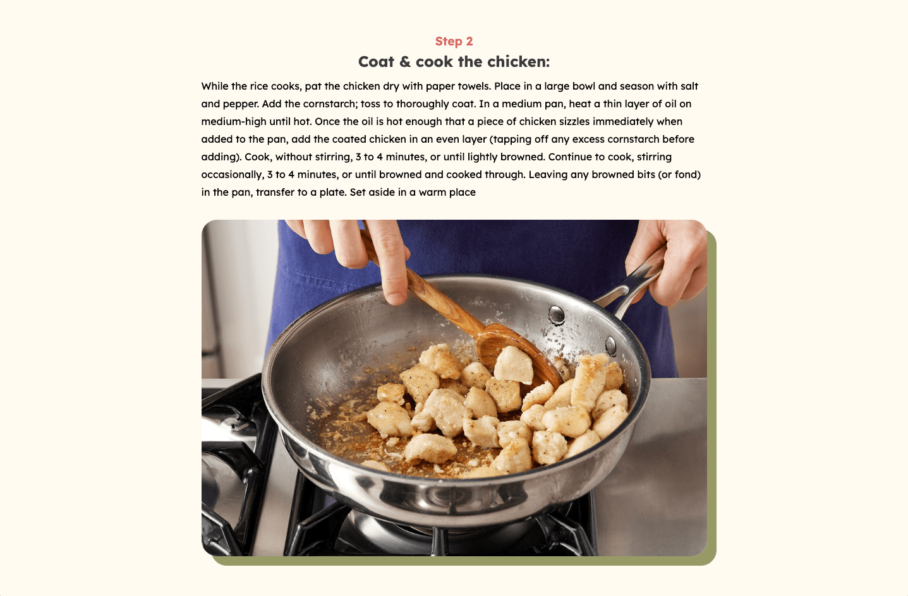

When given a database of 37 recipes with all their information and hundreds of photos, how would one approach building a dynamic recipe website? The answer simply put but not simply executed is PHP. Throughout this project, I took on the goal of intuitively developing a website using PHP to integrate a database of information. With the use of HTML, CSS, PHP, and some Javascript, I was able to carry out my goal and the final result is a responsive recipe website that displays all 37 recipes with their information, ingredients, and steps dynamically. This project not only taught me new skills with PHP, but also pushed me to design better for functionality and user experience.
Going into this project, I knew nothing of PHP nor what it was used for. In previous classes, I learned HTML, CSS, and Javascript and had a basic grasp of those languages. This project opened new doors to both front end and back end development that I had no prior experience with.
The entire process took place over the course of 11 weeks. In the initial weeks, a lot of it was planning and setting up the design of the pages for PHP integration. Those weeks were spent ideating a static layout for the main recipe page that displays all 37 recipes and for the detailed recipe page with all the recipe’s information and steps. After the foundation was set, I was able to integrate PHP into our HTML and connect to the database to display all the recipes dynamically. In the final weeks, I spent time making the search and filters functional, while also debugging and polishing the site itself.
The task at hand was to create a responsive recipe site that displayed all 37 recipes from a database in a functional way. The main page would have all the recipes along with a functional search a filter feature. The detailed recipe page would display all its information and steps along with their respective images. Rather than painstakingly building out each individual recipe page, I had to learn to take one static page and incorporate PHP to build out every recipe page. Utilizing this skill enables dynamic web development and allows the addition of more items in the database without extraneous work.
While the main goal is to built a dynamic recipe website that pulls information from a database, there are also other goals alongside this large task. Other objectives include seamlessly integrating a functional search and filter that makes it easier for users to find their desired recipe. With the use of PHP, adding new recipes should require minimal effort as the code should be able to automatically build it out. The recipe webpage should have a clean, well-thought-out design that lays out information in a visually appealing and concise way for users. Finally, ensuring that the webpage is responsive on smaller screens enables users to have a functional experience no matter what device they are accessing it from.
Before starting the design process, I brainstormed names for this recipe website. I danced around several names until deciding on “Cookify” for its simple and catchy flow. As for the branding, I thought of items that related to cooking and found a pink banner of ingredients that I took inspiration from. Sampling some of the pink and green, I created a bright and fun color palette. I then created the hero image by photoshopping a pan and a random assortment of ingredients against a pink background.
 I designed a simple layout for the main page that displays all the recipes in a grid layout with the protein filter on the left side and the search bar centered. As for the detailed recipe page, I wanted to lay out the information in a clear and accessible way for users to digest. At the top, I displayed important general information then followed it with the ingredients and the steps.
Below is the style guide I designed for the recipe webpage.
Although incorporating PHP seemed like a daunting task initially, in-class demonstrations helped me jumpstart the process and familiarize myself with the language. Displaying all the recipes dynamically was a lot easier to integrate than I expected. However once I tread deeper into the functionality of the code, I ran into challenges.
Selecting Multiple Protein Filters: I wanted to code my filters so that users could select more than one to filter out the recipes. I also included a ‘Clear All” button so they could deselect multiple selections at once easily. To make this work, I first got the filter string from the URL parameters. Then, to split the filter string into an array, I used an explode function. I then utilized a foreach loop to select records from the database protein column that match the filter conditions.
Encasing Ingredients Numbers: For the ingredients list, I wanted each number to be a different color from the rest of the ingredient description. To do so, I used “preg_replace” in a function to search for patterns of digits and fractions in the string. This would wrap them in a span that allowed me to style them easily.
Building Steps Dynamically: In the database, each step description has a number before it, but I wanted to create a clear visual of the start of each step by having each section start with “Step [number].” I coded a for loop to iterate from 1-6 using the variable “$i.” To retrieve the respective step titles and descriptions, I constructed keys that dynamically generate using the step number “$i.” Rather than going through the database and manually removing every number before the step titles, I used “pre_replace” again to remove leading digits and spaces. Finally, I was able to echo all the proper information.
My final main page displays all recipes with a functional search and filter that allows users to select more than one protein option. The recipe cards display the title and subtitle with clear styling differentiation. When the user searches a keyword that yields no results, an error graphic and message will pop up, giving feedback that the user should try a different keyword.
 My final detailed recipe organizes information into their respective sections, making it easy for the user to skim for the details they need. The ingredients and steps are laid out clearly for following along.
  Throughout the span of this project, I learned a lot about database integration and PHP. I think the turnout was successful and I was able to achieve my goals I set. After multiple in-class critiques, I was able to take the feedback I received to make the website more functional and user-friendly. There will always be multiple iterations of projects; design is a constant cycle of going back and improving and debugging. I’m glad that I was able to pick up on valuable skills that I will carry with me throughout my design and development career. If given more time, I would've definitely spent more time implementing other features such as filtering cook time, servings, or calories.